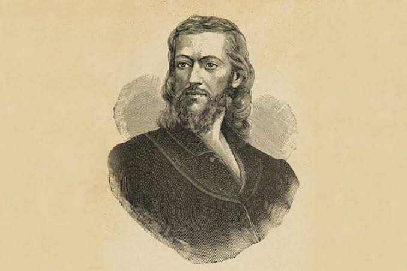
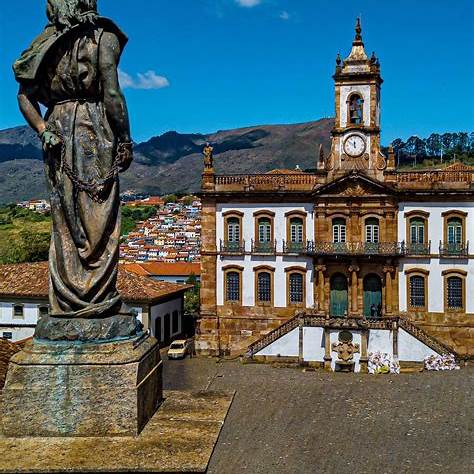
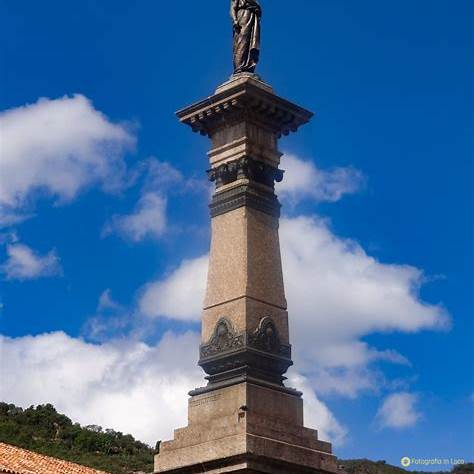
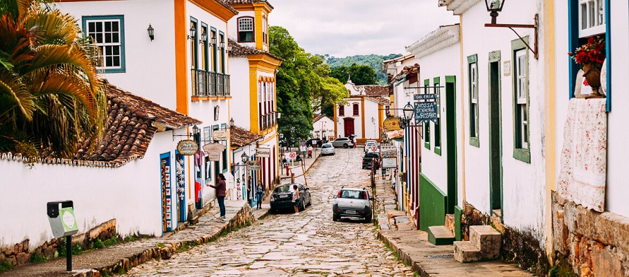
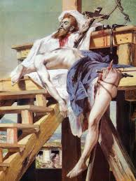

TIRADENTES
Joaquim José da Silva Xavier, mais conhecido como Tiradentes (Fazenda do Pombal, batizado em 12 de novembro de 1746 — Rio de Janeiro, 21 de abril de 1792), foi um dentista, tropeiro, minerador, comerciante, militar e ativista político nascido no Brasil, que atuou nas capitanias de Minas Gerais e Rio de Janeiro.
Tiradentes é nacionalmente conhecido por liderar a conspiração separatista denominada Inconfidência Mineira, contra o domínio português. Quando a trama foi descoberta pelas autoridades, Tiradentes foi preso, julgado e enforcado publicamente. Por conta disso, desde o advento da República no Brasil, Tiradentes é considerado herói nacional: a figura de mártir foi criada pelos republicanos com a intenção de ressignificar a identidade brasileira.
O dia de sua execução, 21 de abril, é feriado nacional. É patrono cívico do Brasil, além de patrono das polícias militares e polícias civis de vários estados brasileiros. Seu nome está inscrito no Livro dos Heróis da Pátria desde 21 de abril de 1992. A cidade mineira de Tiradentes, antiga Vila de São José do Rio das Mortes, foi renomeada em sua homenagem.
BIOGRAFIA
Tiradentes nasceu na Fazenda do Pombal, próximo ao arraial de Santa Rita do Rio Abaixo, à época território disputado entre as vilas de São João del-Rei e São José del-Rei, em Minas Gerais.
Joaquim José da Silva Xavier era o quarto de sete filhos do português Domingos da Silva Santos, proprietário rural, e de Antônia da Encarnação Xavier.
Oriundo de uma família com patrimônio, não era pobre, como se constata por meio do inventário da sua mãe, aberto em 1756. Havia 35 escravos na fazenda do Pombal, onde trabalhavam também em mineração. Um alpendre dava acesso externamente a um oratório e havia senzalas e cozinhas coletivas. Foi ainda relacionada no inventário uma grande e valiosa quantidade de equipamentos para mineração.
Em 1755, após a morte de sua mãe, segue junto a seu pai e irmãos para a sede da Vila de São José; dois anos depois, já com onze anos, morre seu pai. Com a morte prematura dos pais, logo sua família perde as propriedades por dívidas. Não fez estudos regulares e ficou sob a tutela de seu tio e padrinho Sebastião Ferreira Leitão, que era cirurgião dentista. Trabalhou como mascate e minerador, tornou-se sócio de uma botica de assistência à pobreza na ponte do Rosário, em Vila Rica, e se dedicou também às práticas farmacêuticas e ao exercício da profissão de dentista, o que lhe valeu o apelido (alcunha) de Tiradentes. Segundo frei Raimundo de Penaforte, Tiradentes "ornava a boca de novos dentes, feitos por ele mesmo, que pareciam naturais". Trabalhava ocasionalmente como médico, em vista dos conhecimentos sobre plantas medicinais adquiridos com seu primo, frei José Mariano da Conceição Veloso, consagrado botânico à época.
Além das influências externas, fatores mundiais e religiosos contribuíram também para a articulação da conspiração na Capitania de Minas Gerais. Com a constante queda na receita institucional, devido ao declínio da atividade mineradora, a Coroa resolveu, em 1789, a aplicar o mecanismo da Derrama, para garantir que as receitas oriundas do Quinto, imposto português que reservava um quinto (1/5) de todo minério extraído no Reino de Portugal e seus domínios. A partir da nomeação de Luís da Cunha Meneses como governador da capitania, em 1783, ocorreu a marginalização de parte da elite local em detrimento de seu grupo de amigos. O sentimento de revolta atingiu o máximo com a decretação da derrama, uma medida administrativa que permitia a cobrança forçada de impostos, mesmo que preciso fosse prender o cobrado, a ser executada pelo novo governador da Capitania, Luís Antônio Furtado de Mendonça, 6.º Visconde de Barbacena (futuro Conde de Barbacena), o que afetou especialmente as elites mineiras. Isso se fez necessário para se saldar a dívida mineira acumulada, desde 1762, do quinto, que à altura somava 768 arrobas de ouro em impostos atrasados.
Ameaçada de uma derrama violenta, os inconfidentes, entre eles, o tenente-coronel Francisco de Paula Freire de Andrade, os poetas Cláudio Manuel da Costa, Tomás Antônio Gonzaga e Alvarenga Peixoto e Joaquim José da Silva Xavier, o Tiradentes, marcaram um levante para a ocasião da derrama de 1789. Porém, antes que a conspiração se transformasse em revolução, em 15 de março de 1789 foi delatada aos portugueses por Joaquim Silvério dos Reis, coronel, Basílio de Brito Malheiro do Lago, tenente-coronel, e Inácio Correia de Pamplona, luso-açoriano, em troca do perdão de suas dívidas com a Real Fazenda. Anos depois, por ordem do novo oficial de milícia Ernesto Gonçalves, planejou o assassinato de Joaquim Silvério dos Reis. Entrementes, em 14 de março, o Visconde de Barbacena já havia suspendido a derrama, o que esvaziara por completo o movimento. Ao tomar conhecimento da conspiração, Barbacena enviou Silvério dos Reis ao Rio para apresentar-se ao vice-rei, que imediatamente abriu uma investigação (devassa), no dia 7 de maio. Avisado, o alferes Tiradentes, que estava em viagem licenciada ao Rio de Janeiro escondeu-se no sótão da casa de Domingo Fernandes da Cruz, amigo da tia de Alvarenga Peixoto, dona Inácia. Desejando saber "em que termos vão as coisas", pediu ao padre Inácio de Lima, sobrinho de dona Inácia, para que procurasse por Silvério dos Reis: "amigo". No dia 9 de maio, Silvério dos Reis contou ao vice-rei que sabia quem conhecia o paradeiro de Tiradentes. No dia seguinte, o Padre Inácio foi apresentado ao Palácio e ameaçado para entregar a localidade do alferes.
Tiradentes teve a casa cercada ainda no dia 10 por soldados originais da cidade de Estremoz. Escondeu-se atrás das cortinas da cama, segurando um bacamarte carregado, cedido por Matias Sanches Brandão, e mantendo duas pistolas por perto, cedidas por Francisco Xavier Machado. Quando os soldados invadiram o quarto, Tiradentes entregou-se. Talvez ainda houvesse chance para a revolução, mesmo sem ele.
Presos, todos os inconfidentes aguardaram durante três anos pela finalização do processo. Alguns foram condenados à morte e outros ao degredo; algumas horas depois, por carta de clemência de D. Maria I, todas as sentenças foram alteradas para degredo, à exceção apenas para Tiradentes, que continuou condenado à pena capital, porém não por morte cruel como previam as Ordenações do Reino: Tiradentes foi enforcado.
Os réus foram sentenciados pelo crime de lesa-majestade, definida, pelas Ordenações Afonsinas e as Ordenações Filipinas, como traição contra o rei. Tiradentes foi o único conspirador punido com a morte por ser o inconfidente de posição social mais baixa, haja vista que todos os outros ou eram mais ricos, ou detinham patente militar superior.
Execução:
E assim, numa manhã de sábado, 21 de abril de 1792, Tiradentes percorreu em procissão as ruas do centro da cidade do Rio de Janeiro, no trajeto entre a cadeia pública e onde fora armado o patíbulo. O governo geral tratou de transformar aquela numa demonstração de força da coroa portuguesa, fazendo verdadeira encenação. A leitura da sentença estendeu-se por dezoito horas, após a qual houve discursos de aclamação à rainha, e o cortejo munido de verdadeira fanfarra e composta por toda a tropa local. Boris Fausto aponta essa como uma das possíveis causas para a preservação da memória de Tiradentes, argumentando que todo esse espetáculo acabou por despertar a ira da população que presenciou o evento, quando a intenção era, ao contrário, intimidar a população para que não houvesse novas revoltas.
Executado e esquartejado, com seu sangue se lavrou a certidão de que estava cumprida a sentença, tendo sido declarados infames a sua memória e os seus descendentes. Sua cabeça foi erguida em um poste em Vila Rica, tendo sido rapidamente cooptada e nunca mais localizada; os demais restos mortais foram distribuídos ao longo do Caminho Novo: Santana de Cebolas (atual Inconfidência, distrito de Paraíba do Sul), Varginha do Lourenço, Barbacena e Queluz (antiga Carijós, atual Conselheiro Lafaiete), lugares onde fizera seus discursos revolucionários. Arrasaram a casa em que morava, jogando-se sal ao terreno para que nada lá germinasse.